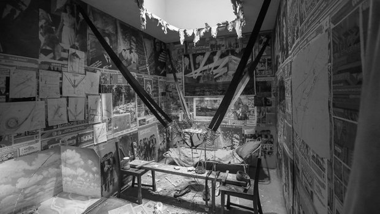

Ramūnas Girdziušas
Contact, Github, WebCV, Blog, résumé.pdf, cv.pdf
I studied electrical engineering in Lithuania from 1994 to 1999, followed by research in machine learning in Finland from 2000 to 2008.
Later I did three postdoc projects and came back to Vilnius (Lithuania) in 2014 with the goal to become a software engineer, a 1x engineer to be precise.
Take a look at some of my work in electronics, embedded software, IoT, 3D, and webdev.
Selected Projects
Work in Progress
Vilnius, Now.
Looking for ways to apply the CRUD-based web to automate massive tedious tasks and build services. My interim release includes backend and frontend for a 3rd party-free user authentication which is a pain point in Node.
lawtrust.eu: lawlt.eu Improved
Vilnius, February 2024.
Tailwind CSS and Go string substitution applied to build a multilingual website for a lawyer who speaks nine languages. Porkbun.com and github pages.
Web-Log
Vilnius, 2023-2024.
A MERN app to log geolocation of the last 50 visitors of this homepage. MongoDB Atlas, Compass, render.com, github pages, ipify.org, and geoip-lite API for the GeoLite data from MaxMind.
Paper Guillotine
Vilnius, 2020 - 2024.
A joint work with Saulius Rakauskas (Infovega). We have been maintaining a real factory machine since February 2020 (last update: February 2024). I wrote a microcontroller code in C (avr-gcc).
P2P Connectivity
Vilnius, 2021 - 2022.
A joint work with Saulius Rakauskas (Infovega): A remote plant watering system with ESP32, MicroPython, Mosquitto MQTT, Ubuntu and awl. Numerous tests of hole punching through layers of routers and the use of the P2P network other than torrents (golibp2p).
Volumetrically-Lit Sponza (Go, Nim)
Vilnius, 2020 - 2022.
Implemented volumetric lighting in Go and Nim (forward rendering, shadow mapping, PBR, 3D ray marching, OpenGL) following Balázs Tóth, Tamás Umenhoffer (2009), and Tomas Öhberg (2017).
Tensor Algebra
Vilnius, 2015 - 2020.
Verified tensor algebras of Donn G. Shankland.
“Après la montagne, il y a la montagne…” − Desireless, Hari om Ramakrishna (1989)
MNIST-0.17 (Python)
Vilnius, 2014 - 2015, 2020.
Confirmed that Jonas Matuzas’ CNN model is one of the most convincing results in the MNIST digit recognition.
3D Shape Normalization (Matlab)
PostDoc Chronicles 3: Lugano, 2013-2014. Mapped the “Unroll the Swiss Roll” problem to the fast multipole method-based electrostatics with an approximate distance constraint handling (simple projections ala Karmarkar and Cimmino in linear algebra). Davide Boscaini implemented the constraint gradient exactly and pushed the error rates.
Cloud Computing (Scilab)
PostDoc Chronicles 2: Saint-Étienne, 2012-2013.
Optimization of the fluid flow which was implemented before me with OpenFOAM, CATIA, STAR CCM+ and ParaView, running on the ProActive PACA Grid cloud (INRIA) via the Scilab-to-Java bridge managed by Fabien Viale. The optimization involved kriging and CMA-ES as the meta-optimizer of the expected multi-point improvement whose MC integration I sped up with a specialized unscented transform. See the slides.
Modified Thomson Problem (Unpublished)
PostDoc Chronicles 1: Los Angeles, 2008-2009.
Prof. Dario Ringach suggested the modified Thomson problem which led me to several precise statements. However, I failed to extend them to a larger program, the path got discontinued due to irrelevance to neurobiology. See the unpublished beginnings in the title link.
My neighbor was hit with a baseball bat by some robbers. He spent a week in the hospital and received a twelve-thousand-dollar bill to pay which was partially covered by the UCLA.
Anisotropic Diffusion Filters
My DSc (PhD) thesis, Espoo 2002-2008.
Unified several strategies of revealing an edge in an additive Gaussian noise with the optimally stopped diffusion of the observed values. Worked with Dr. Jorma Laaksonen and Prof. Erkki Oja.
Daffertshofer-Haken-1994 as a strategically wrong, but inspiring paper, E.T. Jaynes, machine learning in 2000s, my great nine years in Finland: Suomenlinna, Serena… Vaida Rutkauskaitė, Alexander Ilin, Vitaliy Nevdacha, Mykola Ivanchenko, Elia Liitiäinen, Jan-Hendrik Schleimer, Jarrod Creado, Leo Michael, Jaakko Martti Johannes Miettinen, Ville Rantamaula, Dexter He, Mikko Katajamaa, Petteri Räisänen, Jaakko Peltonen, Petri Hyötylä, Matthieu Molinier, Jagdeesh Rajani, Sandro Grech, Ivan Ore, Giedrius Zavadskis, Anita Bisi, Sergej Doudorov, Maxim Govtva, Paola Huaynate… I remember you.
UNIPEN Parser (Matlab)
May 2000.
My first job at the CIS Lab, Helsinki University of Technology (TKK) in Finland (working with Dr. Jorma Laaksonen). During the first two weeks I wrote a parser which loaded UNIPEN data into Matlab structures. The code did not survive, but it was a non-recursive use of fscanf.
| Ilya Kabakov. The Man Who Flew into Space from his Apartment, 1988 |
|---|
|
 |